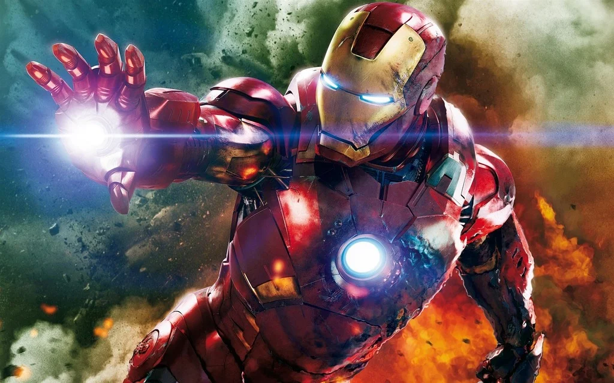
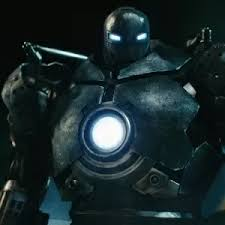
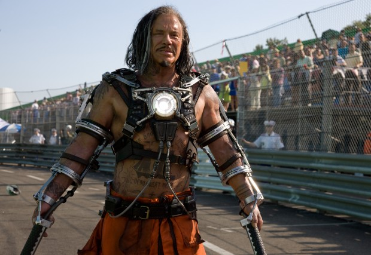
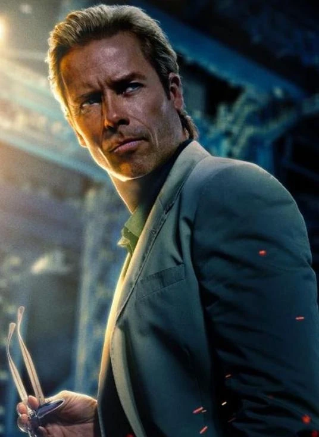

Homem de ferro
Gênio, bilionário, playboy, filantropo

Gênio, bilionário, playboy, filantropo

Ex-parceiro de negócios de Tony Stark. Primeiro rival do Homem de ferro

Físico e é o principal rival do homem de ferro no segundo filme devido ao seu ódio pela família Stark

Fundador e CEO da Advanced Idea Mechanics. É o pricipal rival do homem de ferro no terceiro filme